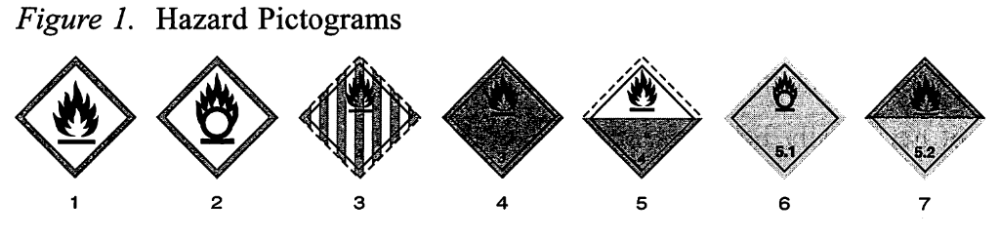
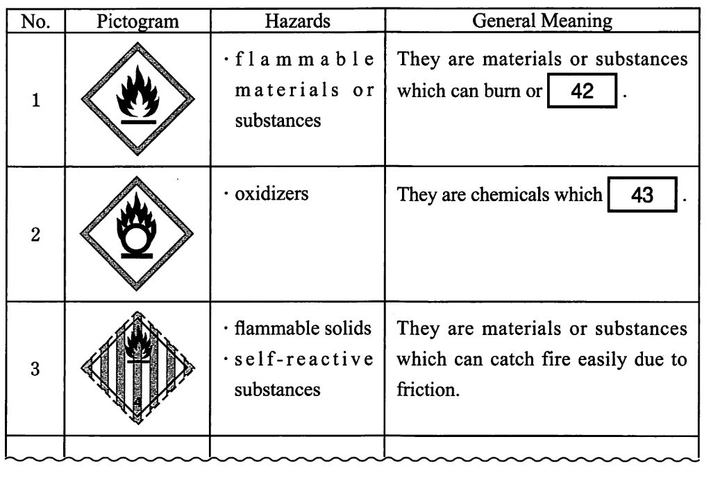

配点 14点
— Symbols Quick to Send a Message —
Pictograms introduced here are graphic images that immediately show the user of a hazardous product what type of hazard is present. With a quick glance you can see, for example, if the product is flammable (capable of burning quickly), or if it might be a health hazard in another way.
Some pictograms have a diamond shape. Inside this diamond is a symbol that represents the potential hazard (e.g., fire, harmful if eaten, strong acid, etc.). Together, the symbol and the design of the diamond are referred to as a pictogram. Pictograms are assigned specific hazard classes or categories.
Hazard pictograms form part of the international Globally Harmonized System of Classification and Labelling of Chemicals (GHS). Two sets of pictograms are included within the GHS: one for the labeling of containers and for workplace hazard warnings, and a second for use during the transport of dangerous goods. Either one or the other is chosen, depending on the target audience, but the two are not used together. The two sets of pictograms use the same symbols for the same hazards, although certain symbols are not required for transport pictograms. Transport pictograms come in a wider variety of colors and may contain additional information such as a subcategory number.
Hazard pictograms are one of the key elements for the labeling of containers under GHS, along with other information such as:
The GHS chemical hazard pictograms are intended to provide the basis for or to replace national systems of hazard pictograms. In fact, GHS transport pictograms are the same as those recommended in the UN Recommendations on the Transport of Dangerous Goods, widely implemented in national regulations in many countries.
The figure below shows some examples of hazard pictograms.

Can you guess what each pictogram means? They are divided into two groups. One group (numbers 1 and 2) shows the first set of pictograms mentioned above, physical hazards pictograms. On the other hand, the other group (numbers 3, 4, 5, 6 and 7) contains the second set, transport pictograms. Now, we will look at each of them, beginning with the first group.
The pictograms of the first group have their own names; No. 1 is called "Flame," and No. 2 is named "Flame over Circle." The former means flammable materials or substances liable to catch fire by themselves when exposed to water or air, or which emit flammable gas and cause other materials to burn, while the latter identifies oxidizers, which are chemicals that help something burn or make fires burn hotter and last longer.
Next, let us move on to the second group. No. 3 shows flammable solids or self-reactive substances. Under conditions encountered in transport, they could possibly catch fire, may cause or contribute to fire through friction, or may explode if not treated carefully. No. 4 means flammable liquids — liquids which have a flash point of less than 60℃ and which are capable of sustaining burning. No. 5 means substances liable to burn spontaneously — substances which are liable to spontaneously heat up under normal conditions encountered in transport, or to heat up due to contact with air, and are then liable to catch fire. No. 6 shows influential substances — substances which, while in themselves not necessarily burnable, may, generally by releasing oxygen, cause, or contribute to, the burning of other material. Finally, No. 7 means organic poisons — organic substances which contain harmful matter or hazardous materials with certain chemical structures.
Each pictogram covers a specific type of hazard and is designed to be immediately recognizable to anyone handling hazardous material, though those pictograms are not so easy for general people to understand.

No. 1 42
※44に入る選択肢を選んでください